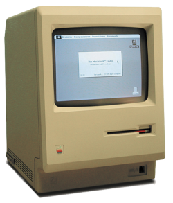
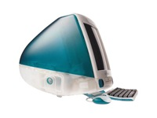

| Year | Product | Cost | Description |
|---|---|---|---|
| 1976 | Apple I | $666 | The Apple I was Apple Computer's first effort in the nascent personal computer industry. It was still very much a kit computer, but came more fully assembled than many off its rivals. Only about 200 units were produced, but it set the stage for Apple's next product... |
| 1977 | Apple II | $1298 | The Apple II was one of the first personal computers and one of the most successful. It propelled Apple Computer, Inc. to great success and set the stage for the future of the company. |
| 1984 | Macintosh | $3195 |  The Macintosh changed the world of computing when it was released. It was the first mainstream to use a graphical user interface and began to change the way people interacted and perceived personal computers. |
| 1988 | NeXTcube | $6500 | The NeXTcube was the first product Steve Jobs helped develop after he left Apple Computer in 1987. It was a high-end workstation, and was used in the development of technologies such as the World Wide Web! The NeXTcube was innovative for its time, and included technologies such as a Magneto-Optical Drive, built-in Ethernet, and Display Postscript. |
| 1998 | iMac | $1299 |  The iMac was produced shortly after Steve Jobs' return to Apple Computer, Inc in 1997. The iMac shared many of the characteristics of the original 1984 Macintosh in that it was an all-in-one system design, but it also ushered in an era of focus on the physical design aspects of computers and components that is still in place today. |
Credit goes to Wikipedia for many of the images and detailed information on the products described on this page.